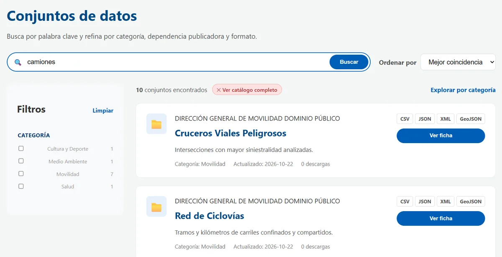

Featured project
Semantic search engine for open data
Web app with semantic search over the open data catalog of the municipal government of León, Guanajuato. It finds datasets from everyday, natural-language queries.
- Python and FastAPI
- ChromaDB and Sentence Transformers
- Vanilla JavaScript
- Docker and Azure Container Apps